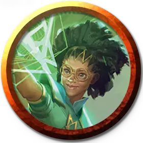

Профессор теории Квандрикса
Quandrix Professor of Theory
Маленький или Средний Гуманоид (Волшебник), любое мировоззрение

Класс Доспеха 12 (15 с доспехом мага)
Хиты 97 (15к8 + 30)
Скорость 30 футов
| мод | спас | ||
|---|---|---|---|
| СИЛ | 11 | +0 | +0 |
| ЛОВ | 14 | +2 | +2 |
| ТЕЛ | 14 | +2 | +5 |
| мод | спас | ||
|---|---|---|---|
| ИНТ | 19 | +4 | +7 |
| МДР | 15 | +2 | +5 |
| ХАР | 13 | +1 | +4 |
Навыки Восприятие +5, Магия +10, Проницательность +5, Расследование +10
Сопротивление урону психическая энергия
Иммунитет к состояниям испуг, очарование
Чувства пассивное Восприятие 15
Языки Общий и ещё четыре языка
Опасность 7 (2900 опыта)
Бонус мастерства +3
Действия
Мультиатака. Профессор совершает две атаки Эвристическим копьём. Он также может использовать Переопределяющую теорему, если она доступна.
Эвристическое копьё. . Рукопашная или дальнобойная атака заклинанием: +7 к попаданию, досягаемость 5 футов или дистанция 60 футов, одно существо. Попадание: 13 (2к8 + 4) урона психической энергией, и цель становится отравленной до конца своего следующего хода.
Переопределяющая теорема (перезарядка 4-6). Профессор волшебным образом воздействует на разум до двух существ, которых он может видеть в пределах 60 футов. Каждая цель должна преуспеть в спасброске Интеллекта Сл 15, иначе станет очарованной профессором до начала следующего хода профессора. Очарованное существо должно немедленно использовать свою реакцию, если таковая имеется, чтобы переместиться на свою скорость к другому существу по выбору профессора и совершить одну рукопашную атаку по этому существу.
Использование заклинаний. Профессор накладывает одно из следующих заклинаний, используя Интеллект в качестве базовой характеристики (Сл спасброска от заклинаний 15):
• Неограниченно: указание [guidance], волшебная рука [mage hand], малая иллюзия [minor illusion];
• 1/день каждое: доспехи мага [mage armor], образ [major image], таинственный мираж [mirage arcane] (накладывается действием), ментальная связь Рэри [Rary's telepathic bond].
Реакции
Деление на ноль (2/день). Когда профессор видит другое существо в пределах 60 футов от себя, накладывающее заклинание, профессор может попытаться аннулировать формирование заклинания. Существо должно преуспеть в спасброске базовой характеристики Сл 15 , иначе заклинание не накладывается и ячейка расходуется впустую.
Описание
Профессора теории развивают философию Квандрикса, согласно которой математико-магические манипуляции наиболее эффективны в абстрактном измерении разума, вероятности и самой структуры магии. Их уравнения глубоко меняют восприятие, изменяют вероятность и вмешиваются в формирование другой магии. В бою профессора настраивают вероятность, чтобы препятствовать атакам, и поражают умы своих врагов пронзительными уравнениями, которые разрушают решимость противника.
Профессора теории считают, что изменение способа взаимодействия человека с миром может изменить мир. Они прививают своим ученикам умение использовать магию как инструмент для формирования общего восприятия реальности и, в свою очередь, делают мир лучше.
Учёные квандрикса
Ученые факультета Квандрикс сосредоточены на математических принципах, которые управляют реальностью. С помощью этих формул они могут манипулировать свойствами материи и пространства, а также абстрактным пространством, таким как разум, вероятность и сам поток магии.